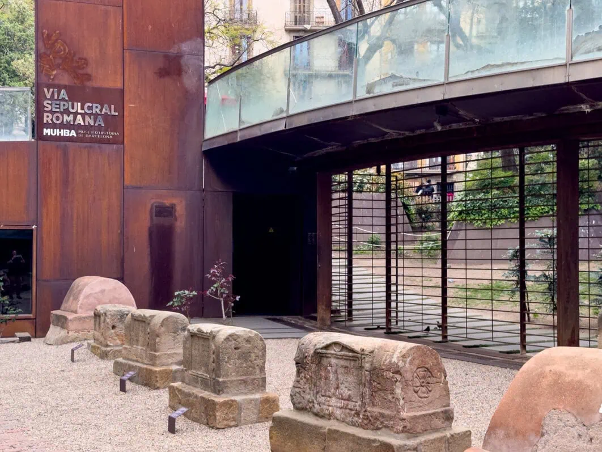

Has llegado al límite del tiempo.
"Has llegado al límite de la ciudad antigua, donde el ruido de tu tiempo se detiene ante el silencio de mis ancestros.
Un gran muro de metal oxidado guarda ahora la entrada a nuestra morada eterna. En él, los hombres de tu siglo han grabado las siglas de aquellos que hoy custodian mi historia y los secretos de Barcino. Si estás frente a la puerta, las verás brillar en el metal."